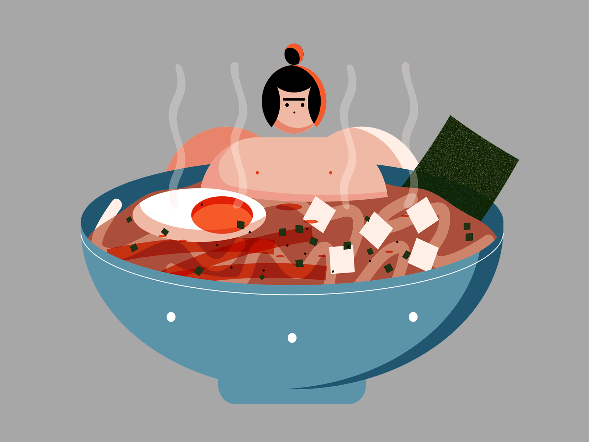

Microwaved Instant Noodles
(Ramen Hacks!)
-Ramen/Instant Noodles recipe for those who don't have a stove, There are multiple ways of cooking one like the Microwave.
-Easy & Simple recipes that can be done basically anywhere.
-The Guide will mostly contain eggs as a must/required ingredient so be sure to prepare a bunch!
Microwaved Ramen Noodles: (With Eggs)
Ingredients:
- 1 instant Ramen/Noodle Pack
- 4 cups of water
- Eggs (As many as you want.)
Instructions/Guide:
- Take out a Bowl. (Specifically, one that can fit a ramwin uwers)
- Put the spice packets in the bowl.
- Break the Ramen/Noodle in half & put the Ramen above the spices.
- Add 4 cups of water (May vary depending on the size of the bowl & kind of noodle pack).
- Move the Ramen bowl inside the Microwave and Microwave for 2 minutes.
- Once finished, crack an egg into the bowl & microwave for another 4 minutes.
(If egg isn't cooked enough keep Microwaving for 1 minute or 30 seconds consecutively until cooked.)
Enjoy!
